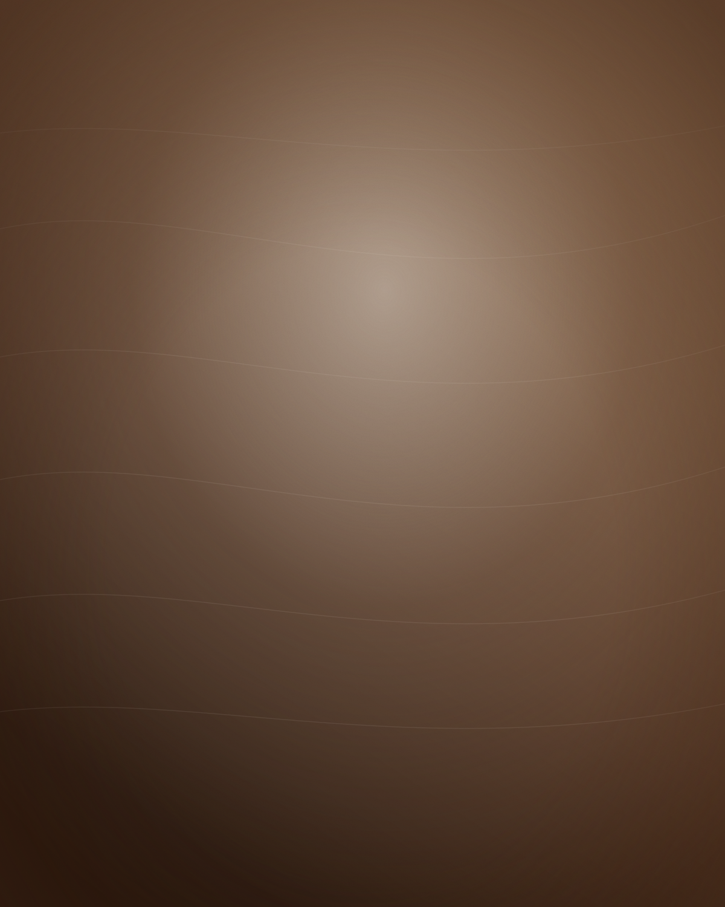

TRAIN
Je plan, met de hand gebouwd
Afgestemd op je niveau, je doel en de tijd die je écht hebt. Je trainingen staan als gestructureerde workouts in TrainingPeaks en direct in je horloge. Naar buiten, op start drukken.
1-OP-1 ENDURANCE COACHING
Een schema kun je gratis downloaden. Coaching is meekijken, bijsturen en eerlijk zijn op het moment dat jij te emotioneel betrokken bent om dat zelf te doen. Bij Running With Wolves krijg je dat in één 360°-plan.

DE ZES PIJLERS
Elk plan, voor elke sport, draait op dezelfde zes pijlers:
TRAIN
Afgestemd op je niveau, je doel en de tijd die je écht hebt. Je trainingen staan als gestructureerde workouts in TrainingPeaks en direct in je horloge. Naar buiten, op start drukken.
BUILD
Geen los extraatje, maar onderdeel van je plan. Functioneel, veel eenbenig, binnen 45 minuten klaar. Voor een lijf dat belastbaar is en na uren nog power levert.
FUEL
Je voedingsplan in The Athlete's FoodCoach beweegt mee met je trainingen. Meer koolhydraten op zware dagen, minder op rustige. En gewoon mee-eten met je gezin. Gefueld trainen is een wereld van verschil.
RECOVER
Slaap, stress, HRV en rusthartslag. Soms is een training schrappen precies wat ervoor zorgt dat je over drie weken wél kunt knallen.
ANALYZE
We kijken naar je hartslag, je vermogen, je herstel tussen de blokjes. Zien we iets geks, dan horen we het van jou en schakelen we.
ADAPT
Je stuurt een korte check-in, wij sturen een video-analyse terug. Voelt een week zwaar? Dan passen we je plan direct aan.
De aanpak is voor iedereen hetzelfde. Wat verschilt, is hoeveel begeleiding je wilt. Daar hangt je investering van af.
Frequentie
5 à 6 weken — elke weekHoe vaak je je coach spreekt. Van een coachcall elke 5 à 6 weken tot elke week een call.
Testen & analyses
Thuis — lactaat & InscydVan testen die je thuis doet tot lactaatmetingen, een Inscyd-profiel en loopanalyses.
Voedingsbegeleiding
Plan — volledige begeleidingVan een voedingsplan dat meebeweegt met je training tot volledige begeleiding richting een strakker en lichter lijf.
We werken met trajecten van 6 of 12 maanden. Wat bij jou past en wat het kost, bespreken we in de intake.
Een marathon of Ironman bouw je niet in acht weken. Dat is een takkeind. Een giga motor bouwen kost tijd, en vooral consistentie. Daarom werken we het liefst een jaar samen.
We beginnen niet met "koop zes maanden coaching". We beginnen met: waar sta je, waar wil je heen en hoeveel tijd hebben we nodig om dat goed te doen?